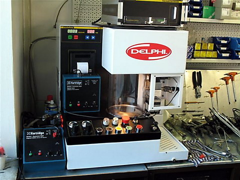

A képen a hagyományos örvénykamrás motorokhoz kifejlesztett porlasztók láthatóak, Bosch és Lucas kivitelben. Jobb szélen az elektronikusan vezérelt diesel befecskendező rendszernél használt jeladós porlasztók láthatóak.
Jobb szélen a Ford Transit 2.5d motorján található Stanaday tipusú (amerikai) porlasztó látható. Ennek érdekessége, hogy nem javitható, meghibásodása esetén eldobandó.
A képen különböző kivitelű, tipusú kétrugós porlasztók láthatóak. Közös bennük, hogy a porlasztótű elmozdulását két egymás után beépített rugó ereje vezérli. Ezzel a megoldással sikerült a direkt befecskendezésű motorok égési zaját mérsékelni.
A mérőóra 400 bar mérési tartományú, mely 2 bar pontossággal leolvasható. Kalibrált nyomóelemmel, kifejezetten a Bosch 1 és 2 rugós porlasztóinak vizsgálatához. 2 rugós vizsgálatakor természetesen csak az első nyitónyomás értékét mutatja. A Bosch adott típusú porlasztójának javításakor a gyári porlasztócsúcs csere-szettet szereljük be. Ebben az esetben a technológiai leírás szerint, amennyiben az EPS-100 porlasztóvizsgálón az első nyitónyomás értéke megfelelő, akkor a második nyitónyomás értéke is jó lesz.

Ez az egység már elszívó-berendezéssel, világítással is rendelkezik. Digitális kijelzéssel működik. Alkalmas még a porlasztó nyomásveszteségi idő mérésére is.
Ez a műszer csak a HH701 Testmaster-rel összekapcsolva tudja a mért érékeket kijelezni, megjeleníteni annak képernyőjén. A berendezés használata az adatbázisában nem szereplő porlasztók esetében körülményes. 5 - 10 - 15 mérést is el kell végezni ahhoz, hogy be tudjuk határolni a pontos méréshez szükséges alapbeállítási értékeket.
DIT31 berendezés szintén alkalmas a kétrugós porlasztók mindkét nyitónyomás-értékének a méréséhez. A berendezés a Cr porlasztók vizsgálatánál kerül ismertetésre.